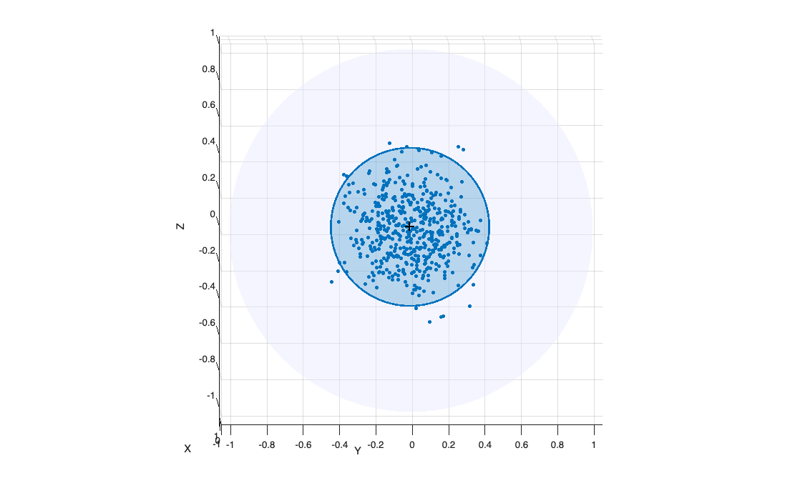
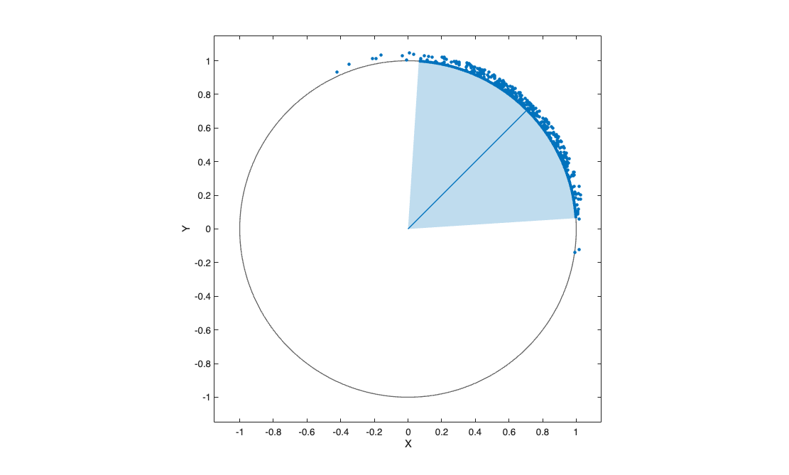

vMFrnd
vMFrnd generates random unit vectors from the von Mises-Fisher distribution in any dimensio
Syntax
Y=vMFrnd(n, mu, kappa)example
Description
vMFrnd returns an n-by-p matrix whose rows are independent draws from the von Mises-Fisher distribution vMF(mu,kappa) on the unit hypersphere S^(p-1) in R^p, with density f(y; mu, kappa) = C_p(kappa) * exp(kappa * mu' * y), where mu (a unit vector) is the mean direction and kappa>=0 is the concentration parameter. The dimension p is the length of mu and can be any integer greater than or equal to 2: p=2 gives the von Mises distribution on the circle, p=3 the Fisher distribution on the sphere, large p the setting of document embeddings. The sample is exact: it is obtained with the acceptance-rejection algorithm of Wood (1994), whose acceptance rate is high for every p and kappa.
vMFrnd is the vMF counterpart of Kentrnd: data generated by vMFrnd form a "circular cap" around mu, while those generated by Kentrnd (p=3 only) form an "elliptical cap".
Examples
 A circular cap on the sphere (p=3).
A circular cap on the sphere (p=3).
A circular cap on the sphere (p=3).. 500 draws from a vMF distribution with mean direction [1 0 0], plotted with the 95 per cent confidence cap.
rng(1)
mu = [1 0 0]; kappa = 30;
Y = vMFrnd(500, mu, kappa);
sphereplot(Y, 'cap', struct('mu',mu,'kappa',kappa));
Related Examples
von Mises data on the circle (p=2).
von Mises data on the circle (p=2).
rng(2)
mu = [1 1]; kappa = 8;
Y = vMFrnd(300, mu, kappa);
sphereplot(Y, 'cap', struct('mu',mu,'kappa',kappa));
Input Arguments
Output Arguments
More About
References
Ulrich, G. (1984), Computer generation of distributions on the m-sphere, Applied Statistics, Vol. 33, pp. 158-163.
Wood, A.T.A. (1994), Simulation of the von Mises Fisher distribution, Communications in Statistics - Simulation and Computation, Vol. 23, pp. 157-164.
Mardia, K.V. and Jupp, P.E. (2000), Directional Statistics, Wiley, Chichester.
See Also
Kentrnd
|
sphereplot
|
tclustvmf
|
logvMFpdfFS
|
kappaFS
|
vMFcap